Adatbázis-kezelés: önálló feladat és gyakorló kérdések
Ennek a dokumentumnak a segítségével egy új adatbázist készítünk. Az adatbázis három táblát tartalmaz: színészek adatait, darabok adatait és előadások adatait. Lépésenként először importálni fogjuk az adatokat, utána beállítjuk köztük a kapcsolatokat, majd ezek segítségével hajtunk végre lekérdezéseket. A lekérdezéseket elmentjük, ezek is részei lesznek a végén elmentett fájlnak.
A felhasznált táblákat ezekre a hivatkozásokra jobb gombbal kattintva (majd a Link mentése másként... opciót választva) töltheted le: színészek tábla, darabok tábla, előadások tábla.
1. Adatbázis létrehozása
Részletes feladatleírás lépésenként
- Új adatbázis létrehozása: nyisd meg az Accesst ()! Megnyitáskor az Üres adatbázis lehetőséget kell választani (kivéve persze, ha egy már létező adatbázist szeretnél megnyitni máskor). Itt azonnal meg kell adni, hogy hova és milyen néven szeretnéd menteni a fájlt; add meg a fájlnevet (legyen szinhaz.accdb), válassz egy helyet, majd kattints a Létrehozás gombra! Ide kattintva látod, hogy mi micsoda az ablakban.
2. Adatok importálása
Részletes feladatleírás lépésenként
- Importálás kiválasztása: kattints a Külső adatok fülre, majd válaszd az Új adatforrás menüt!
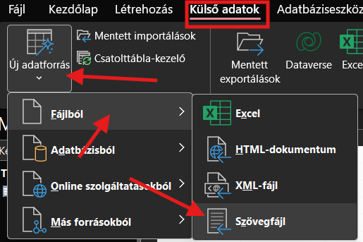
- Adatok kiválasztása: kattints a Tallózás gombra, majd keresd ki az egyik letöltött txt-fájlt! Kattints rá duplán, vagy válaszd a Megnyitás gombot, majd kattints az OK gombra a párbeszédablakban!
- Beállítások ellenőrzése: a következő lépésekben a Szövegimportáló varázsló segítségével állítjuk be az importálandó adatokat, hogy minden megfelelően jelenjen meg.
- A párbeszédablak bal alsó sarkában kattints a Speciális gombra! Itt tudjuk beállítani, hogy pl. milyen karakterkódolást használunk. Ezzel akkor kell foglalkozni, ha az ékezetes karakterek nem megfelelően jelennek meg (ahogyan most is). Állítsd át a Kódlap típusát Unicode (UTF-8)-ra, majd nyomd meg az OK-t!
- Az első ablakban azt adhatjuk meg, hogy mivel tagoljuk az adatokat. Ez lehet egy konkrét karakter, pl. a pontosvessző (mint itt is), de lehet az is, hogy minden adat egyforma hosszúságú. Itt maradhat a jelölő, mehetsz tovább.
- A második oldalon a mezőket határoló karaktert választhatod ki. Szerencsére felismeri, hogy a pontosvessző az. Fontos viszont, hogy itt kell megadni, ha az első sor a mezők neveit tartalmazza, vagyis, ha az adatsor fejlécet is tartalmaz. Ha ezt nem adjuk meg, akkor hiba fog keletkezni. Tegyél pipát ennek a jelölőnégyzetébe, majd menj tovább!
- A következő oldalon az egyes mezők adattípusait adhatod meg. Általában jól tippel a program, de most nem tökéletes. Kattints a Születési dátum oszlopra, és állítsd a típust Dátum és időpontra!
- A következő oldalon kell kiválasztani, hogy mi alapján azonosítsa az adatokat a program. Ez valami olyan kell legyen, ami biztosan csak egyszer fordul elő az adatsorban. Most van ilyenünk, ez az id oszlop, ezért válaszd ki azt a lehetőséget, hogy Magam választom ki, és válaszd az id mezőt!
- Ezután már csak nevet kell adnod a táblának, de itt is jó a javaslat: Szineszek.
- Figyelj, hogy az importálás végén mit ír ki a program: sajnos nagyon hasonló, ha minden rendben ment, és ha hiba történt. A legkönnyebb talán azt meglátni, hogy hibás importálás esetén készít egy plusz táblát, amelyben összegyűjti, hogy mik nem sikerültek. Ha sikertelen az importálás, akkor töröld ki a rosszul importált táblát és a hibajegyzéket, majd ismételd meg a fenti lépéseket!
Ezeket a lépéseket mindhárom táblára ismételd meg! Figyelj, hogy a többiben is jó típusúak legyenek a dátumok! Ha készen vagy, akkor zárd be a Tábla1 táblát: mivel ebben nincsenek adatok, a program automatikusan ki is fogja törölni.
3. Kapcsolatok létrehozása
Részletes feladatleírás lépésenként
Most össze kell kapcsolni a színészeket, a darabokat és a konkrét előadásokat egymással. A táblák sok esetben tartalmaznak hivatkozást egy másik táblára, pl. a darabok a főszereplő színész azonosítóját.
- Kattints az Adatbáziseszközök menüre, majd válaszd ki a Kapcsolatok parancsot!
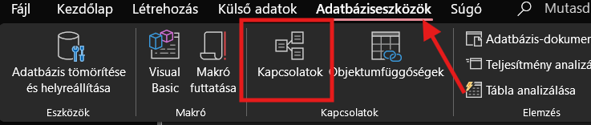
- Táblák hozzáadása: a megnyíló ablakban tudjuk majd beállítani a kapcsolatokat, de előbb hozzá kell adni azokat a táblákat, amelyek között kapcsolatot akarunk kialakítani. A hozzáadható táblákat a képernyő jobb szélén találod. Vigyázz! Nem csak táblákat adhatsz hozzá! Ha esetleg nem találod a tábládat, akkor meg kell nézni, hogy a fenti választó nem állt-e át valamiért mondjuk a lekérdezésekre, hiszen azok közt nem találod majd meg a tábláidat. Kattints duplán mindhárom tábla nevére!
- Kapcsolatok szerkesztése: a bent lévő kis táblákat szabadon mozgathatod, ahogy kényelmes. Kattints az összetartozó párok közül az egyikre, mondjuk a Darabok tábla foszereplo_id-jére, és húzd rá a Szineszek tábla id sorára! Ekkor megjelenik egy kis párbeszédablak, ahol ellenőrizheted, hogy jól állítottad-e párba őket.
- Az összes kapcsolat létrehozása: kapcsold össze az összetartozókat!
4. Szöveges keresés műfaj alapján
Részletes feladatleírás lépésenként
Készen vagyunk az alapokkal, kezdődhet a lekérdezés! Listázd ki, hogy mely darabok műfaja musical!
- Lekérdezéstervező megnyitása: válaszd a Létrehozás fülön a Lekérdezéstervező lehetőséget!
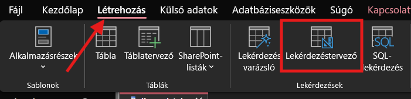
- Táblák kiválasztása: egy lekérdezésnél a legelső mindig az, hogy ki kell választani a táblá(ka)t, amellyel (amelyekkel) dolgozunk. Válaszd ki a Darabok táblát úgy, hogy a jobb oldalon duplán kattintasz rá! Figyelj, hogy itt is át tud váltani a nézet pl. lekérdezésekre!
- Mező kiválasztása: főleg, ha több táblával dolgozol, érdemes a középső részen kiválasztani azt a mezőt (vagyis a táblának azt a részét), amelyre szükséged van. Ha duplán rákattintasz, akkor automatikusan bekerül a lenti táblázatba.
- A lekérdezés megjelenítése: ha készen vagy a lekérdezéssel (vagy ellenőrizni szeretnéd, hol tartasz), a képernyő bal felső sarkában kell a Nézet vagy a Futtatás ikonra kattintanod. Ekkor megjelenik a kész lekérdezés egy táblázatban.
- Lekérdezés további beállításai: amint látod, ez a lekérdezés eddig nem túl informatív, hiszen csak azt látjuk, hogy 3 olyan darab van, amely műfaja musical. Lépjünk vissza a Lekérdezéstervező nézetre úgy, hogy megint a bal felső sarokba kattintunk a Nézet gombra ()!
- A darabok címének kiírása, műfaj elrejtése: add hozzá a lekérdezéshez a cim mezőt is! Ahhoz, hogy a "musical" szó ne jelenjen meg sokszor a lekérdezésben, vedd ki a pipát a mufaj alatti oszlopban a Megjelenítés sorból!
- Lekérdezés megtekintése és mentése: válts nézetet, majd a ctrl + s billentyűkombinációval mentsd el a lekérdezést! A név legyen 01_musical
5. Szűrés dátumra
Részletes feladatleírás lépésenként
A következő lépésben kilistázzuk azokat az előadásokat, amelyek 2026 januárjában kerültek megrendezésre. A dátum, a helyszín és a jegyár kell, hogy megjelenjen majd a lekérdezésben.
- Készíts egy új lekérdezést: Létrehozás, Lekérdezéstervező.
- Add hozzá a lekérdezéshez az Eloadasok táblát! Válaszd ki ennek a "datum", a "helyszin" és a "jegyar" mezőit!
- Feltétel megadása: a datum oszlopba beírjuk, hogy csak a 2026. januári darabok jelenjenek meg. Ehhez a Feltétel sorba írd be, hogy Between "2026.01.01." And "2026.01.31."
Itt megjegyzem, hogy a kis- és nagybetűk itt sem számítanak különbözőnek, ahogy a Microsoft szoftvereiben általában. Itt most az idézőjeleket sem fontos kitenni. Ha csupa kisbetűvel, idézőjelek nélkül írjuk be a feltételt, futtatáskor megváltozik a formázás az ide beillesztettre.
- Nézd meg a lekérdezést, majd mentsd el 02_januar néven!
6. Szűrés dátumra 2.
Részletes feladatleírás lépésenként
Most azokat az eseményeket listázzuk ki, amelyek 2026. 03. 27. után kerülnek megrendezésre.
- Készíts új lekérdezést a Lekérdezéstervezővel, és add hozzá az Eloadasok táblát! Add hozzá ismét a "datum", "helyszin" és "jegyar" mezőket.
- Feltétel megadása: a feltétel most legyen ez: > 2026.03.27.
- Mentsd el a lekérdezést 03_jovobeli néven!
7. Összetett szűrés
Részletes feladatleírás lépésenként
Most azokat az előadásokat listázzuk ki, amelyek a nagyszínpadon vannak és olcsók. Vegyük bele most a darab címét is!
- Táblák hozzáadása: add hozzá most az Eloadasok és a Darabok táblát is! A kettő közt meg kell jelennie a korábban beállított kapcsolatnak.
8. Három táblás lekérdezés
Részletes feladatleírás lépésenként
9. Számított mező
Részletes feladatleírás lépésenként
10. Dátumfüggvény
Részletes feladatleírás lépésenként
11. Groupby & Count: hányszor játszották a darabokat?
Részletes feladatleírás lépésenként
12. Groupby & Sum: mennyi a helyszínek teljes bevétele?
Részletes feladatleírás lépésenként
13. Átlagolás: mennyibe kerül a jegy egy-egy műfajú előadásra?
Részletes feladatleírás lépésenként
14. Kereszttáblás lekérdezés
Részletes feladatleírás lépésenként
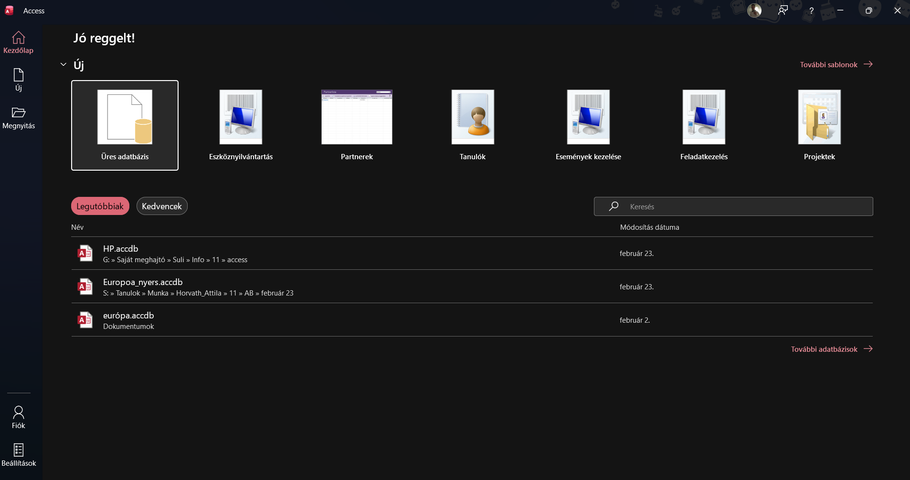
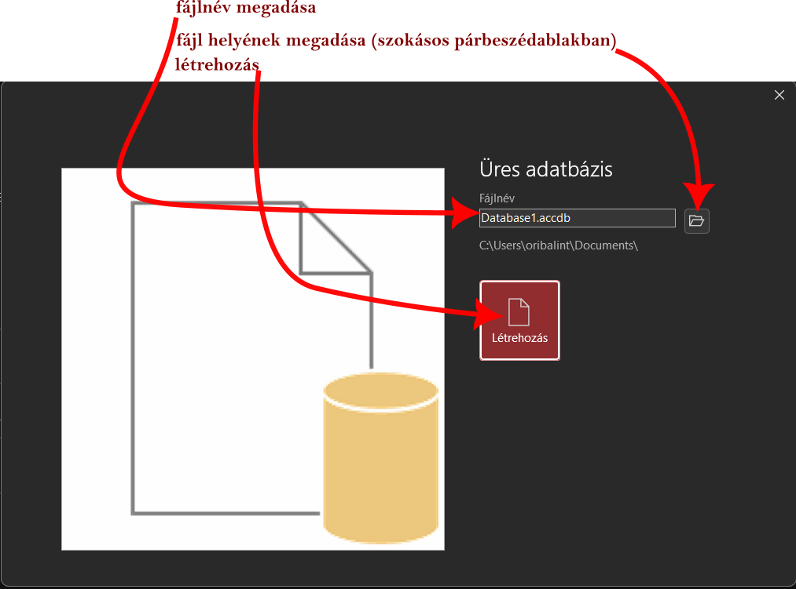
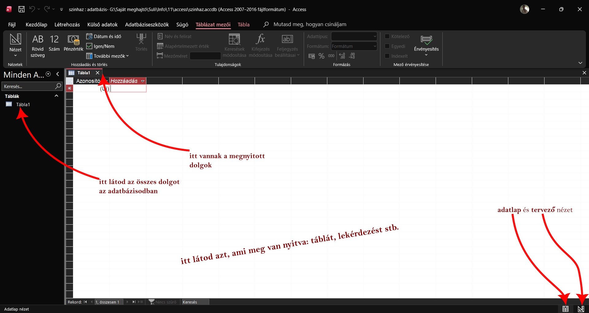
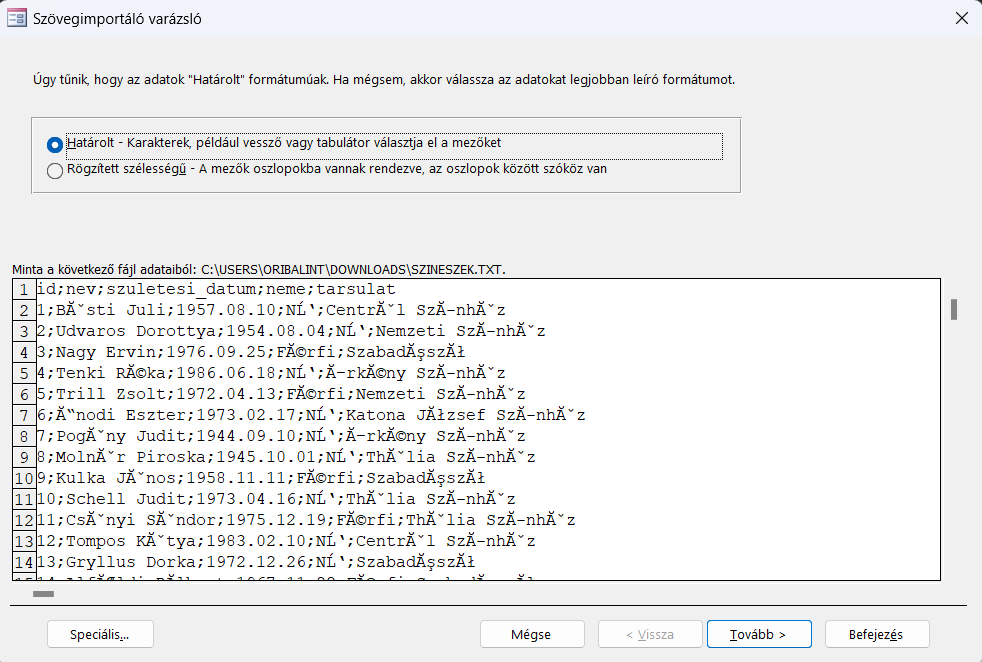
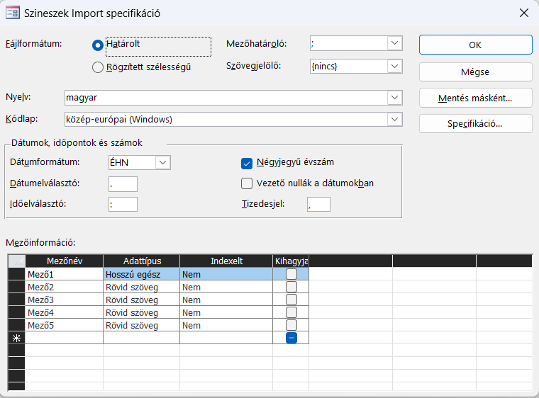
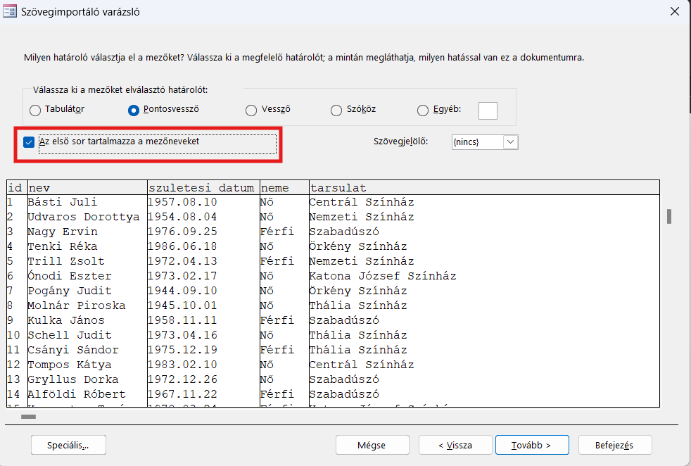
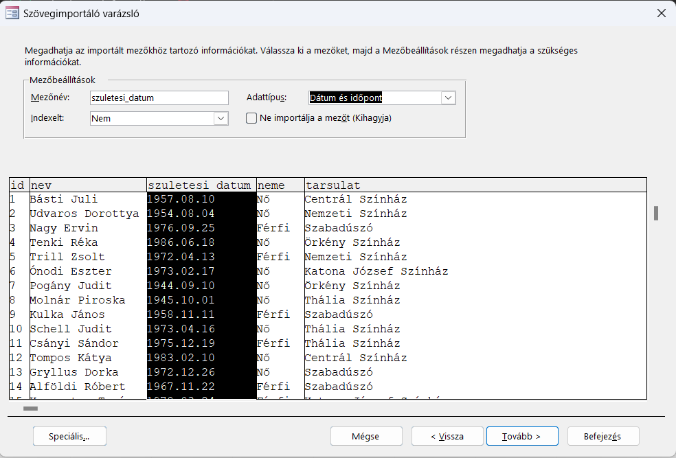
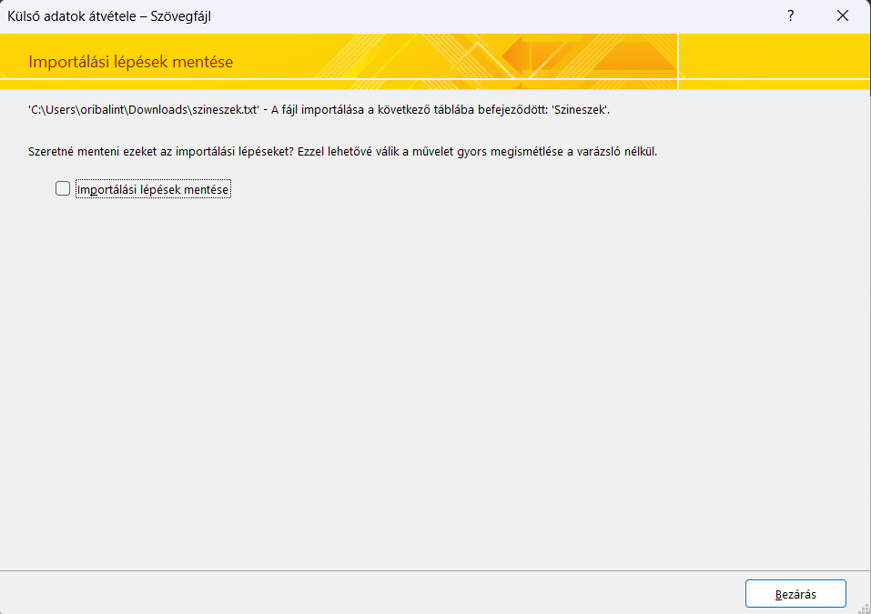
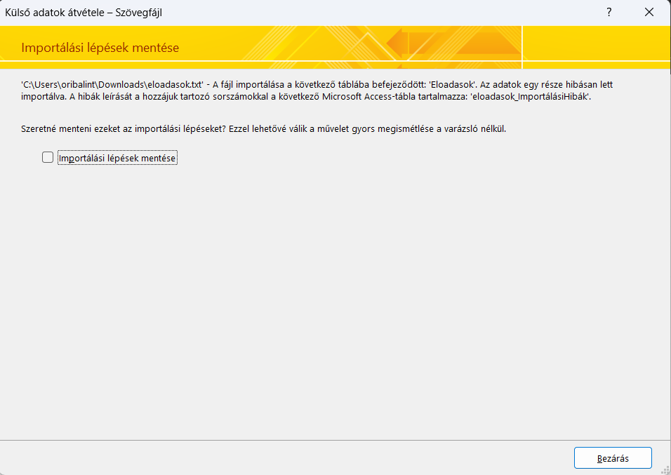
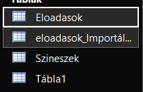
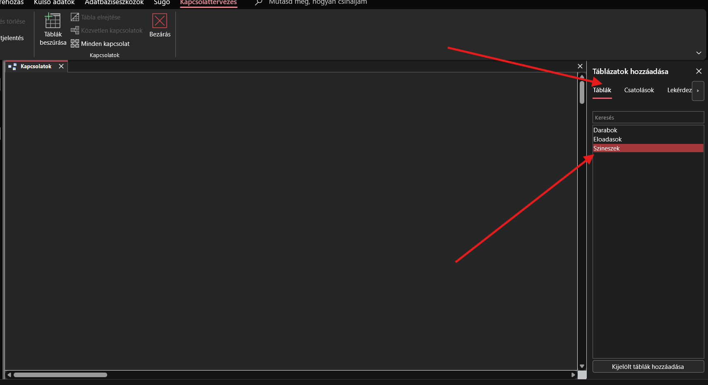
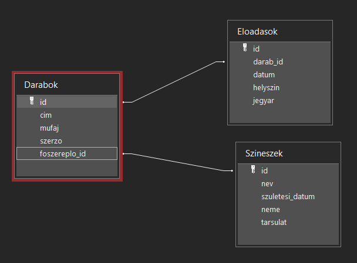
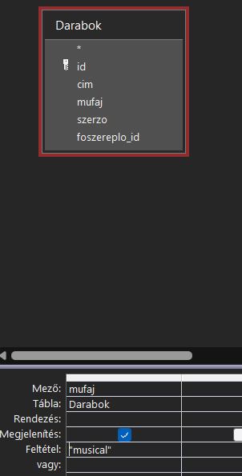
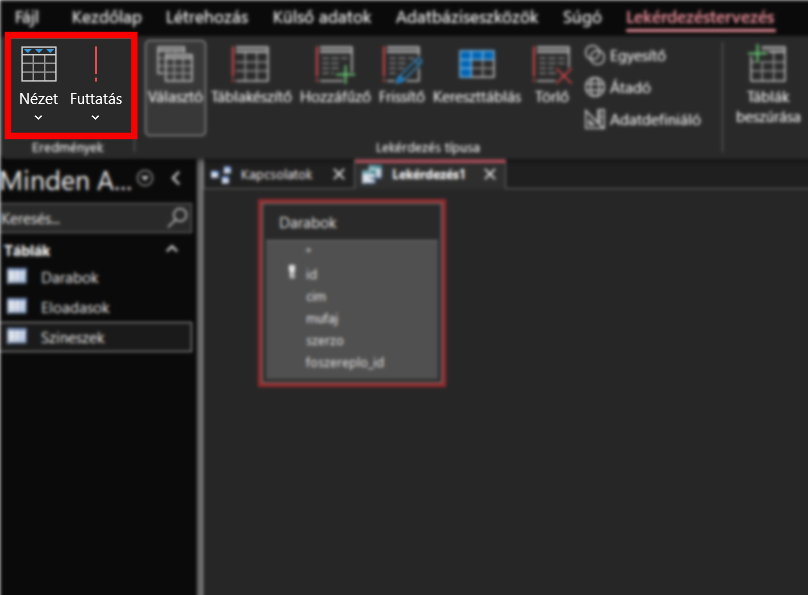
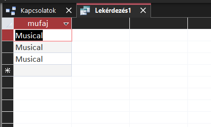
×